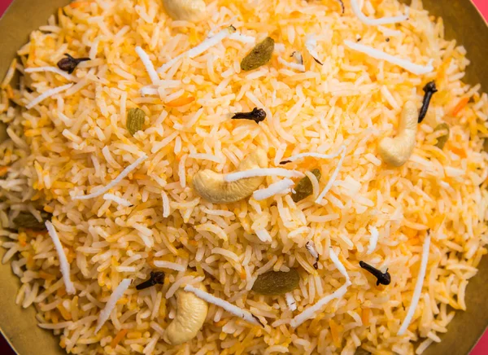

One of my passions is travelling. Travel involves visiting new places and meeting new people and having varied experiences. I come originally from Romania and have travelled to UK and US. I remember the quote by Samuel Johnson: “All travel has its advantages. If the passenger visits better countries, he may learn to improve his own. And if fortune carries him to worse, he may learn to enjoy it”. I have had the luck of visiting better countries and I believe my travel experiences have taught me a lot about human life and helped me expand the way I see things.
When I first travelled within Romania, it opened my eyes to how other people live. I saw how people lived happily even though they did not have much money or luxuries. It taught me that to be happy, money is not the only thing. I must have an attitude to be happy with what I have. It also taught me to accept people from different races and colors. When I travelled abroad, I saw new cultures and different lifestyles.
Above all, whenever I return to Romania after my travels, it helps me appreciate my home country a lot. I value Romanian culture and the warm way in which people relate to each other. I can appreciate it all the more when I travel abroad. Thus, my passion for travel while giving me fun, dreams and confidence, has also educated me, helped me embrace new cultures and new communication skills, adopt a more global perspective, improve my English and given me lots of good friends and wonderful memories. It has made me a richer person internally.
